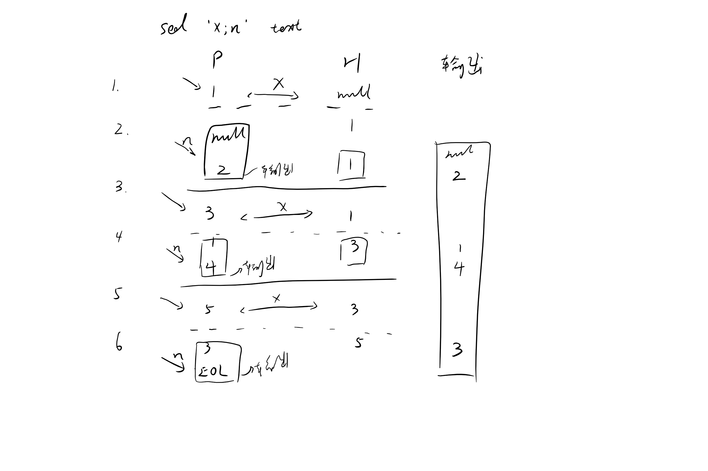
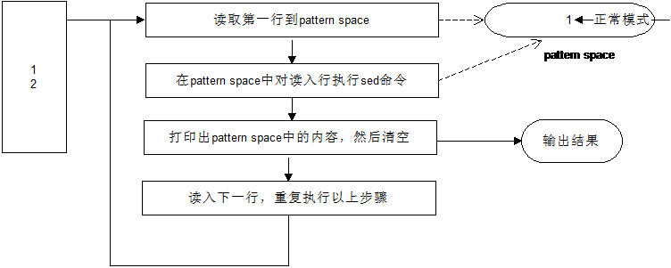
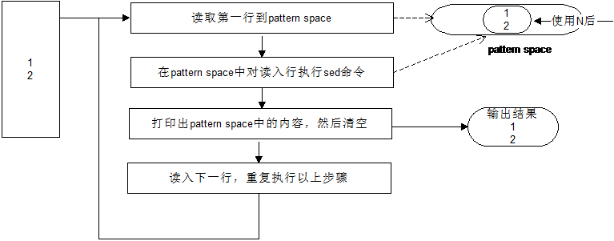

Chapter 6. Sed Hold and Pattern Space Commands
sed的保留空间和模式空间
- pattern space（模式空间）相当于车间sed把流内容在这里处理；
- hold space（保留空间）相当于仓库，加工的半成品在这里临时储存（当然加工完的成品也在这里存储）。
Swap Pattern Space with Hold Space (x command)
交换H空间和P空间里面的内容
- [root@localordb sed_test]# sed -e 'x;n' empnametitle.txt
- CEO
- John Doe
- IT Manager
- Jason Smith
- Sysadmin
- Raj Reddy
- Developer
- Anand Ram
- Sales Manager
- [root@localordb sed_test]# cat empnametitle.txt
- John Doe
- CEO
- Jason Smith
- IT Manager
- Raj Reddy
- Sysadmin
- Anand Ram
- Developer
- Jane Miller
- Sales Manager
sed ‘x;N’ employee.txt 步骤分析

Copy Pattern Space to Hold Space (h command)
拷贝P空间到H空间；和命令x 不同，命令h 不会修改当前模式空间的内容。执行命令h 时，当前保持空间的内容会被模式空间的内容覆盖
Print the names of the managers(输出managers的名字)
- # sed -n -e '/Manager/!h' -e '/Manager/{x;p}' empnametitle.txt
- Jason Smith
- Jane Miller
- /Manager/!h 不匹配Manager的行拷贝到H空间
- /Manager/{x;p} 匹配到Manager后，交换H空间的内容，并输出
Append Pattern Space to Hold Space (H command)
添加P空间到H空间，大写H 命令表示把模式空间的内容追加到保持空间，追加之前保持空间的内容不会被覆盖；相反，它在当前保持空间
内容后面加上换行符\n，然后把模式空间内容追加进去
Copy Hold Space to Pattern Space (g command)
get从H空间复制到P空间
Append Hold Space to Pattern Space (G command)
添加P空间到H空间,大写G 命令把当前保持空间的内容作为新行追加到模式空间中。模式空间中的内容不会被覆盖，该命令在模式空间后面加上换行符\n，然后把保持空间内容追加进去
n 与 N 命令的区别

命令n：小写命令n 打印当前模式空间的内容， 并清空模式空间， 从输入文件中读取下一行到模式空间，然后执行后面的命令；
N命令：就像大写的命令H和G 一样，只会追加内容而不是替换内容， 命令N 从输入文件中读取下一行并追加到模式空间， 而不是替换模式空间;

打印命令
- p：小写p 打印模式空间的内容；
- P：大写的P 也打印模式空间内容，直到他遇到换行符\n;
- d：小写d 会删除模式空间内容，然后读取下一条记录到模式空间，并忽略后面的命令，从头开始下一次循环；
- D：大写命令D，既不会读取下一条记录，也不会完全清空模式空间（除非模式空间内只有一行）
- 删除模式空间的部分内容，知道遇到换行符\n
- 忽略后续命令， 在当前模式空间中从头开始执行命令